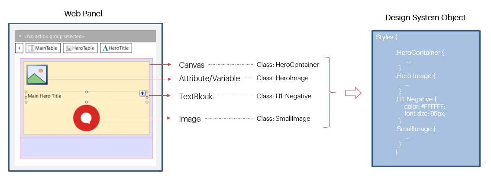
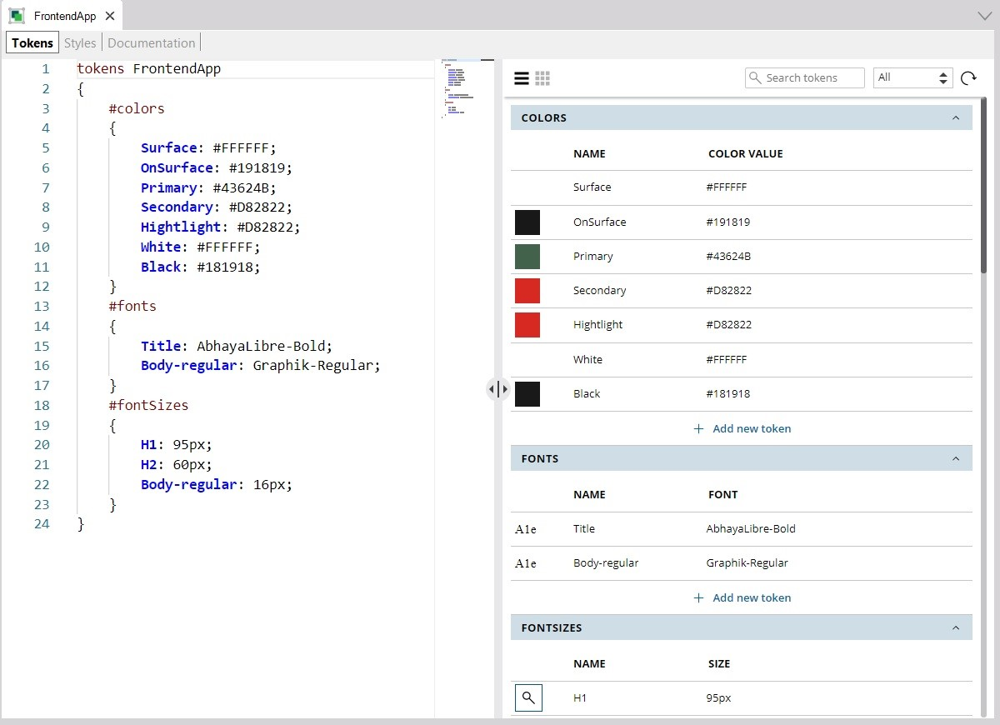
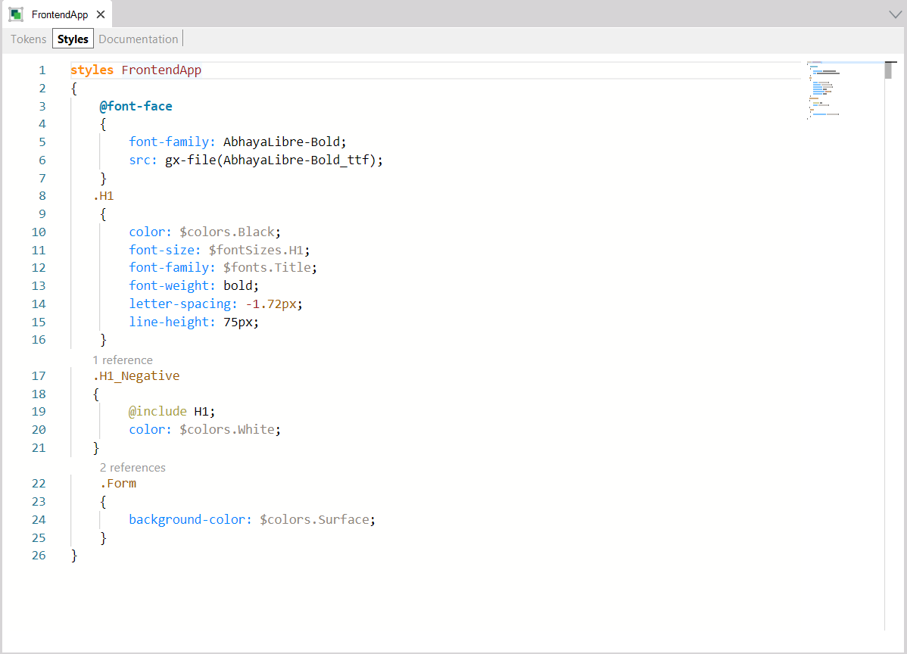
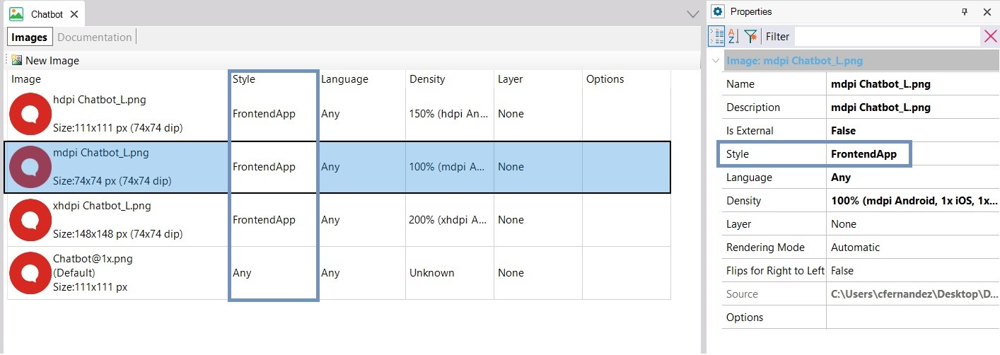
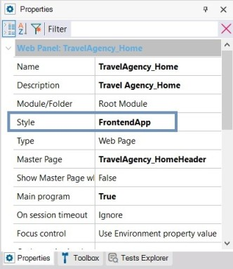
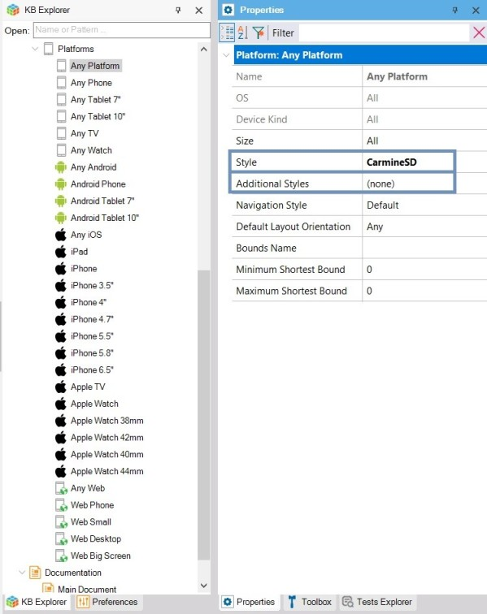

Design System Object
It defines style features for screen controls, with the purpose of achieving increased abstraction in the app design, allowing for easier reuse and assembly.
Description
It configures a rather significant portion of the Design System of an application (or part of it), and replaces the Theme Object.
It enables the definition of:
● Constants relative to color, font, size, etc.
● Classes to be applied to the controls of the UI’s layouts, to give them a style using properties.
Once created, it is possible to associate it with any executable GeneXus object with a UI (Transaction, Web Panel, Panel, and so on) for determining its design. So, each control on screen will be assigned a class (or several), whose design properties will be centralized in the Design System Object (DSO).
The assignment may be done to each individual object in the case of Web (non-Angular) objects, and it is also possible to assign at runtime (for both Web and Mobile). The default is defined at the level of the Knowledge Base version for Web (non-Angular) objects, and at the Platform level for native Mobile or Angular objects.
Exemplification
When you associate an H1_Negative name class (both statically and at runtime) to the TextBlock control of a Web Panel like the one shown below:

So, when a DSO (simplified as shown) has been associated with the Web Panel, the content of the TextBlock at runtime will be shown with a font size of 95 pixels and white color (#FFFFFF). The reason for this is that the H1_Negative class appears in the DSO, with those values in the color and font-size properties.
When the properties of that class in the DSO are modified afterwards, then the control style at runtime will change (for this TextBlock and for any other control with the same class assigned).
If the DSO does not include an H1_Negative class, then the TextBlock will be shown with the control’s default values, as if no class was assigned to it at all.
Classes are not pre-defined. The DSO allows full freedom to create those that better fit the Design System of the app being implemented.
For a guided introduction to the what and the how of Design System Object with a simplified example, you can read How to model a Design System from scratch.
To find out the advantages of this object in relation to Theme Object, go to: Comparison between Theme and Design System objects.
Object Parts
Upon the creation of the object, in addition to the documentation tab, you will have two tabs with their respective editors:
● Tokens: here, design constants will be defined with a name, for modeling options relative to color, typography, spacing and so on. They will be used later in the Styles tab.
● Styles: here, the design of classes for the app’s controls is defined. The definition includes a set of properties with their respective values for each class. Values may be literals and also tokens.
The object's properties include a Base CSS property so that when the DSO is to be used in a Web application it will already have a base CSS. As a result, certain controls will be rendered with a style already provided in that base CSS without having to specify those styles from scratch in the DSO.
New Design System Object
When a DSO is created, the Tokens and Styles tabs will appear empty.
Specifically, the Tokens tab will have a double editor to facilitate entry and handling of tokens: a text one on the left, and synchronized with it, on the right, a graphic editor.
However, the Styles tab only has a text editor, with a language similar to that of CSS. So much so that it enables the direct copy of CSS definitions.
Example
Below is a DSO where some tokens have been created:

The separation is by type. In this DSO, tokens were defined for the types: colors, font families and font sizes. But there are more types: radius, spacing, borders, shadows, etc. These types are fixed, and not created by the developer.
So far, only three classes have been defined in the Styles tab, in addition to a rule in order to allow the inclusion of a non-standard font, which, as shown, is taken from a file that should be previously included in the KB:

The “.H1” selector allows the definition of the features of class H1, which may be used in controls containing text, such as Text Blocks or Attributes/Variables. So, for instance, a control with this class will have a line height of 75 pixels, and a font size defined in the token of the fontSizes type, called H1, which is 95 pixels, as shown in the Tokens tab.
Additionally, the features of class H1_Negative are all the same as those of class H1 (due to the @include rule that has been specified), plus the feature of assigning the color of the color token named White. A color was already specified in H1, and now it is overwritten. So, the only difference between a control with class H1 assigned and a control with class H1_Negative assigned is the text color.
Classes are assigned to controls both statically and dynamically, but always by means of the Class property. The creation of classes is free, with no pre-defined classes.
The Image object may also be caused to vary by DSO, by means of the Style property of the specific file that is being edited, and associated with the image:

Setting up Design System Object for an object or application
The assignment may be done for each individual object in the case of Web (non-angular) objects, and through the Style property, which admits a DSO or a Theme as value.

For Mobile or Web Angular objects, the individual static assignment is not available.
At the level of the KB version, the Style property will determine the default value for all Web (non-Angular) objects created. For the time being, the default is Carmine theme, though it may be replaced with a DSO.
At the platform level for native Mobile or Web Angular experience, the Style property will define the default value for all objects created for those platforms. For the time being, the default value continues to be the CarmineSD theme, but it may be replaced with a DSO.

In mobile and Angular platforms, the Additional Styles property allows you to indicate which styles will be possible to assign at runtime. This is to make GeneXus aware that they must be generated, even when they are not being used at design time.
The DSO may be defined in a module, packaged with a module, and it is possible to have Design System Objects with the same name, in different modules. What is not possible is the coexistence of a Theme and a DSO with the same name.
Inheritance and extension
A DSO may inherit from another DSO, or part of it, extending it. This enables, for example, the possibility of having a DSO only for defining the class structure for a given app, and another DSO to extend it with a different color palette, or with more classes and tokens.
This inheritance is defined in the Styles section of the DSO, using the @import clause.
Relation with the Theme object
In the end, the DSO will fully replace the Theme object. For now, though, they will both coexist, with the possibility of using a DSO wherever a Theme is applied.
The idea is for the DSO to cover the Theme’s functionalities completely, allowing for increased possibilities and also reducing the inconveniences of the Theme object.
To start with, you cannot use a Web Theme for native Mobile platforms, nor the other way around. However, you can do this with DSOs, since they are multi-platform.
At any time you can convert a Theme object into a Design System Object with the option “Save as Design System”.

And also change all Themes used to a DSO and everything would continue to function exactly the same.
See also
How to associate a Design System object to your screens
Comparison between Theme and Design System objects
Availability
This feature is available since GeneXus 17 Upgrade 6.